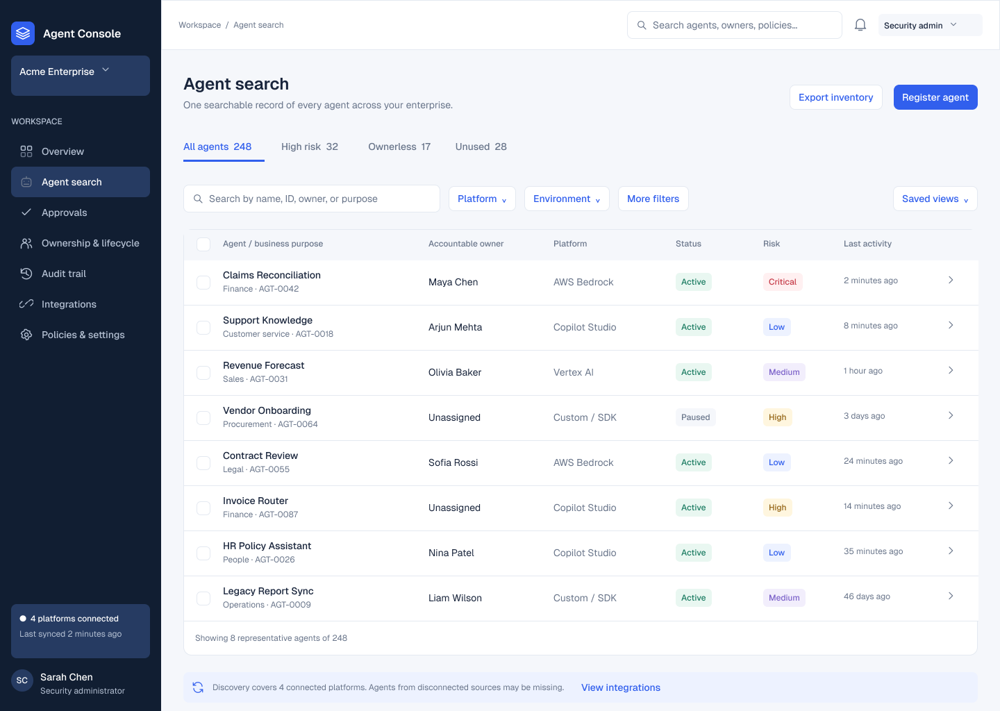
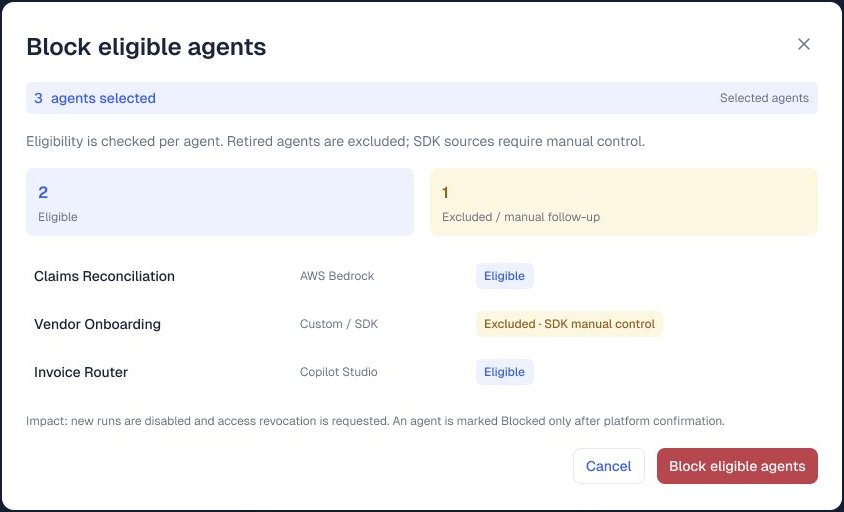

Discover
Find agents across platforms through a common inventory and business metadata.
AI AGENT CATALOG AND GOVERNANCE
A product management case study connecting agent discovery, accountable ownership, risk triage, and deliberate governance actions.
Designed by Saurabh Thakre · Interactive Figma prototype · Sample enterprise data

Agent Search · a catalog with the context to actFind agents across platforms through a common inventory and business metadata.
Review ownership, permissions, risk, and dependencies in the agent's context.
Check action eligibility, require confirmation, and distinguish success from failure.
INTERACTIVE PROTOTYPE
Start with the inventory. Try High risk, open Claims Reconciliation, and explore its details.
The interactions run in Figma and use sample data. If the embed does not load, use the direct prototype link above. On a small screen, expand the demo for a closer view.
DESIGN EVIDENCE




PRODUCT THINKING
Problem framing, stewardship concepts, prioritization tradeoffs, validation plans, and relevance to the evolving data governance market.